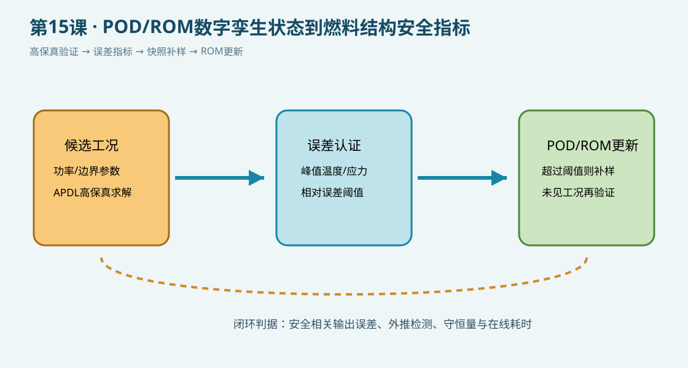

{kind=link}
验证状态：已静态检查，尚未运行 MAPDL
已静态核对SI单位、轴对称热分析流程、误差阈值判断、POD补样逻辑和每条可执行命令的中文行尾注释；本机未运行MAPDL，tref仅为教学参考参数。

/CLEAR/PREP7PLANE55KEYOPTMPRECTNGAATTAGLUEAMESHBFASFL*DO*IFSOLVE*GET*VWRITE
今日目标
在第11课快照生成基础上，增加误差指标和自适应补样逻辑：先用APDL高保真模型检查候选工况，再把超过阈值的工况加入POD/ROM快照库。误差认证和SVD/POD分解在外部后处理中完成，APDL只负责可追溯的高保真数据。
物理问题
模型采用轴对称燃料—间隙—包壳热传导和外表面对流边界。七个功率工况用于演示离线候选点筛选。tref 是教学参考值，不能替代已验证的高保真基准；正式研究需用独立ANSYS/MAPDL结果、实验数据或经过验证的参考解。
关键命令
*DO：扫描候选参数工况。*GET：提取峰值温度。*IF：根据误差阈值标记需要补充快照的工况。*VWRITE：输出ROM外部程序使用的误差日志。
完整脚本
下载 [example.inp](example.inp)。每条可执行命令均附中文行尾注释；static_only 表示本机未运行MAPDL。
预期结果
脚本应输出每个候选工况的峰值温度和相对误差，并标记超过阈值的工况。外部POD/ROM程序应优先用这些工况补充快照，再用未参与建基的工况验证温度、应力、位移和守恒量。
POD/ROM工作链
- 生成初始快照并计算POD基。
- 在候选工况上运行ROM，记录安全相关输出误差。
- 对超过阈值的工况调用高保真APDL模型并补入快照。
- 更新POD基，直到误差、外推检测和在线耗时同时满足要求。
验证清单
tref必须来自独立高保真或实验基准。- 阈值应针对峰值温度、应力和位移分别设定，不能只看平均误差。
- 补样工况不能同时作为最终盲验证工况。
- 记录网格、单位、材料参数和边界历史，避免误差来源混淆。
常见错误
- 把教学参考值当成实验真值。
- 只增加训练样本、不报告补样前后的误差变化。
- 用同一工况既建POD基又验证ROM，产生数据泄漏。
练习
- 将误差指标从峰值温度扩展到包壳热应力和位移。
- 比较固定均匀采样与误差驱动自适应采样的高保真计算成本。
- 增加冷却剂温度和接触导热系数作为候选参数，并测试外推工况。
完整 example.inp（逐行中文注释）
01! 第12课：POD/ROM数字孪生状态到燃料结构安全指标；SI单位 m、kg、s、K、Pa 02/CLEAR,NOSTART ! 清空数据库，建立独立教学算例 03/FILNAME,lesson15_pod_error ! 设置输出文件名前缀 04rf=4.00e-3 ! 燃料半径，单位 m 05rc_i=4.10e-3 ! 包壳内半径，单位 m 06rc_o=4.75e-3 ! 包壳外半径，单位 m 07height=0.10 ! 教学轴向长度，单位 m 08qv0=2.0e8 ! 基准体积热源，单位 W/m^3 09hcool=2.0e4 ! 外表面对流系数，单位 W/(m^2 K) 10tbulk=580 ! 冷却剂体温，单位 K 11tref=1200 ! 参考高保真峰值，用于教学误差指标，单位 K 12tol=0.02 ! 误差阈值，超过阈值时需要补充快照 13*DIM,errlog,ARRAY,7,4 ! 定义七个候选工况和四列误差日志 14*CFOPEN,lesson15_error,txt ! 打开误差评估文件 15*VWRITE ! 写入误差文件表头；下一行为格式 16('case,qv[W/m3],Tmax[K],relative_error') ! 写入列名 17*DO,icase,1,7,1 ! 扫描七个功率工况 18 qv=qv0*(0.70+0.10*(icase-1)) ! 设置当前候选工况的功率 19 /PREP7 ! 进入前处理器建立当前工况模型 20 ET,1,PLANE55 ! 定义二维热传导单元 21 KEYOPT,1,3,1 ! 设置轴对称热分析选项 22 MP,KXX,1,3.0 ! 设置燃料导热率，单位 W/(m K) 23 MP,KXX,2,16.0 ! 设置包壳导热率，单位 W/(m K) 24 RECTNG,0,rf,0,height ! 创建燃料 r-z 截面 25 AATT,1,,1 ! 给燃料区域指定材料1和单元1 26 RECTNG,rf,rc_i,0,height ! 创建等效间隙区域 27 AATT,1,,1 ! 给间隙区域指定教学等效材料 28 RECTNG,rc_i,rc_o,0,height ! 创建包壳 r-z 截面 29 AATT,2,,1 ! 给包壳区域指定材料2和单元1 30 AGLUE,ALL ! 合并相邻区域拓扑 31 ESIZE,0.15e-3 ! 设置目标网格尺寸，单位 m 32 AMESH,ALL ! 对全部区域划分网格 33 ASEL,S,LOC,X,0,rf ! 选择燃料区域 34 BFA,ALL,HGEN,qv ! 施加当前工况体积热源 35 ALLSEL,ALL ! 恢复全部选择集 36 LSEL,S,LOC,X,rc_o ! 选择包壳外边界 37 SFL,ALL,CONV,hcool,tbulk ! 施加外表面对流边界 38 ALLSEL,ALL ! 恢复完整选择集 39 FINISH ! 完成当前工况前处理 40 /SOLU ! 进入求解器 41 ANTYPE,STATIC ! 设置稳态热分析 42 SOLVE ! 求解当前高保真候选快照 43 FINISH ! 结束当前工况求解 44 /POST1 ! 进入后处理器 45 SET,LAST ! 读取最后结果集 46 *GET,tmax,NODE,0,MAX,TEMP ! 提取当前工况峰值温度，单位 K 47 relerr=ABS(tmax-tref)/MAX(ABS(tref),1.0) ! 计算相对误差指标 48 errlog(icase,1)=icase ! 保存工况编号 49 errlog(icase,2)=qv ! 保存工况功率 50 errlog(icase,3)=tmax ! 保存高保真峰值温度 51 errlog(icase,4)=relerr ! 保存相对误差指标 52 *VWRITE,icase,qv,tmax,relerr ! 输出误差指标供外部ROM程序筛选 53 (F6.0,',',E16.8,',',F16.4,',',E16.8) ! 设置误差日志格式 54 *IF,relerr,GT,tol,THEN ! 判断候选工况是否超过误差阈值 55 *VWRITE,icase ! 输出需要补充快照的工况编号 56 ('enrich_case=',F6.0) ! 标记自适应加密工况 57 *ENDIF ! 结束误差阈值判断 58 FINISH ! 结束当前工况后处理 59 /CLEAR,NOSTART ! 清空数据库，避免工况之间累积几何 60*ENDDO ! 结束七个候选工况扫描 61*CFCLOS ! 关闭误差日志文件 62/POST1 ! 进入后处理器说明结果使用方式 63*CFOPEN,lesson15_rom_note,txt ! 创建ROM在线使用说明文件 64*VWRITE ! 写入ROM说明 65('Use lesson15_error.txt to enrich POD snapshots where relative_error exceeds tol.') ! 说明外部ROM自适应补样逻辑 66*CFCLOS ! 关闭ROM说明文件 67FINISH ! 结束第12课算例